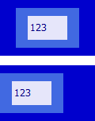
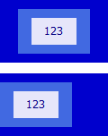
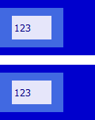

HA8001: 在 IE6 IE7 IE8(Q) 中 CENTER 元素自身也会居中对齐，在 IE(S) 与 Opera(S) 中还会使其包含的表格中的文本居中对齐
标准参考
W3C HTML3.2 规范中对 CENTER 元素的 DTD 定义如下：
<!-- CENTER is a shorthand for DIV with ALIGN=CENTER --> <!ELEMENT center - - %body.content>
CENTER 元素与 align 属性为 'center' 的 DIV 元素等价，即 CENTER = DIV[align="center"]。此元素最初由 NetScape 正式支持 HTML3.0 中的 DIV 元素之前被引入，在 HTML3.2 中仍然被保留是源于其广泛的使用程度。
DIV 元素的 align 属性会控制其内的文本内容的对齐方式。
关于 CENTER 元素的详细信息，请参考 HTML3.2 规范 DIV and CENTER 中的内容，以及 HTML4.01 规范 15.1.2 Alignment 中的内容。
问题描述
CENTER 元素在 IE6 IE7 IE8(Q) 中会使自身也居中对齐，除了上述浏览器，在 IE(S) 与 Opera(S) 中 CENTER 元素还会使其内表格中的单元格内文本居中对齐。
造成的影响
若在页面中使用了过时的 CENTER 元素进行布局，则可能造成页面整体对齐方式在不同浏览器中出现很大的差异。
受影响的浏览器
| IE6 IE7 IE8(Q) | |
|---|---|
| IE8(S) Opera(S) |
问题分析
HTML3.2 规范中提到 CENTER 元素与 DIV[align="center"] 等价，下面就针对这两种元素进行对比分析。
分析以下代码：
<!DOCTYPE html>
<html>
<head>
<style>
body, table { font:12px Tahoma; color:navy; }
</style>
</head>
<body>
<div style="width:120px; padding:10px 0; background:mediumblue;">
<center id="d1" style="width:80px; padding:10px 0; background:royalblue;">
<table id="t1" style="width:50px; height:30px; background:lavender;">
<tr>
<td>123</td>
</tr>
</table>
</center>
</div>
<br />
<div style="width:120px; padding:10px 0; background:mediumblue;">
<div id="d2" align="center" style="width:80px; padding:10px 0; background:royalblue;">
<table id="t2" style="width:50px; height:30px; background:lavender;">
<tr>
<td>123</td>
</tr>
</table>
</div>
</div>
</body>
</html>
上面的代码分为两组，每组中的结构类似。区别为第一组使用 CENTER 元素居中其内元素，第二组使用 align 属性值为“center”的 DIV 元素居中其内文本。
这段代码在不同的浏览器环境中的表现如下：
| IE6(Q) IE7(Q) IE8(Q) | IE6(S) IE7(S) | IE8(S) Opera(S) | Firefox Chrome Safari Opera(Q) |
|---|---|---|---|
|  |  |  |
 |
可见，所有浏览器中，CENTER 元素均可以使其一级块级子元素居中对齐。
在 IE6 IE7 IE8(Q) 中，CENTER 元素可以使自身也居中对齐，而 IE(S) Opera(S) 中无论是 CENTER 元素还是设定了 align="center" 的 DIV 元素，其内的文字也会居中对齐。
解决方案
避免使用 CENTER 标签，使用 CSS 的 'text-align' 特性来代替。
参见
知识库
相关问题
测试环境
| 操作系统版本: | Windows 7 Ultimate build 7600 |
|---|---|
| 浏览器版本: |
IE6 IE7 IE8 Firefox 3.6 Chrome 5.0.356.2 dev Safari 4.0.4 Opera 10.50 |
| 测试页面: | center.html |
| 本文更新时间: | 2010-07-01 |
关键字
CENTER text-align text alignment 居中 对齐 文本